Aparición
Bellona aparece atacando al iniciar cada fase. Si te golpea, pierdes 1 vida.
Guía de bosses · MapleStory
Todos los patrones de Bellona en Easy, Normal y Hard: el medidor Insane, las dos fases, cada ataque con cómo esquivarlo y la recolección de marcas.
Bellona tiene dos fases y tres dificultades. Cada valor con tres cifras va en orden Easy / Normal / Hard.
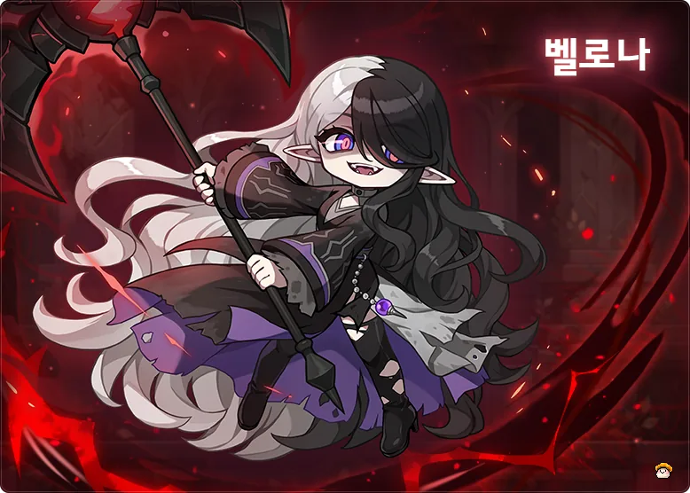
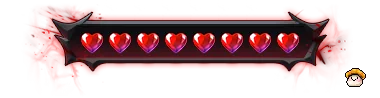
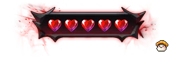
Efectos de pantalla cuando pierdes una vida
Es la mecánica central de la pelea. Controla cuándo Bellona se vuelve agresiva y cuánto daño recibe.
| Tipo de ataque | Baja el medidor | Daño |
|---|---|---|
| Morado | 8080160 | Porcentaje de tu HP máximo |
| Rojo | 200400600 | Te quita 1 vida (Death Count) |
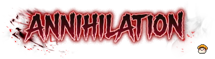
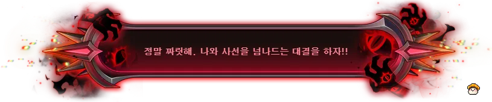
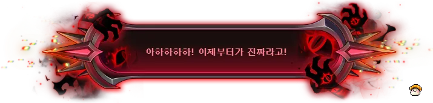
Fase 1: “¡Qué emoción! ¡Peleemos al filo de la muerte!”
정말 짜릿해. 나와 사선을 넘나드는 대결을 하자!!
Fase 2: “¡Ajajajaja! ¡Ahora empieza lo bueno!”
아하하하하! 이제부터가 진짜라고!
Mensaje del sistema: Bellona entra en modo Insane. Ahora se hace daño al atacar y el daño que recibe aumenta un 30%.
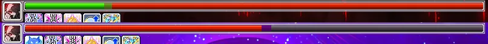
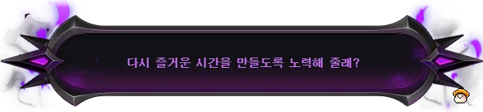
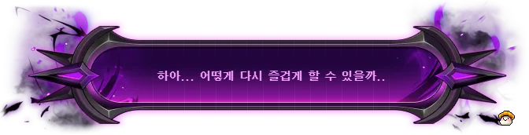
Fase 1: “¿Te esforzarás para que volvamos a divertirnos?”
다시 즐거운 시간을 만들도록 노력해 줄래?
Fase 2: “Haa... ¿cómo podría volver a divertirme...?”
하아... 어떻게 다시 즐겁게 할 수 있을까..
Mensaje del sistema: el combate se calmó y terminó el modo Insane.
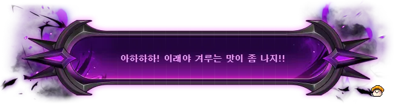
“¡Ajajaja! ¡Así sí da gusto pelear!”
아하하하! 이래야 겨루는 맛이 좀 나지!!
Mensaje del sistema: superaste la locura de Bellona y recuperas vitalidad.
La pelea tiene dos fases. Cada una tiene la barra de HP dividida en 2 tramos de 50%, y cada tramo que bajas agrega patrones.
Al entrar: si te golpea un ataque cargado con las almas de Wraithrend recibirás mucho daño. Si el combate sigue parejo, el espíritu competitivo de Bellona llegará al máximo.
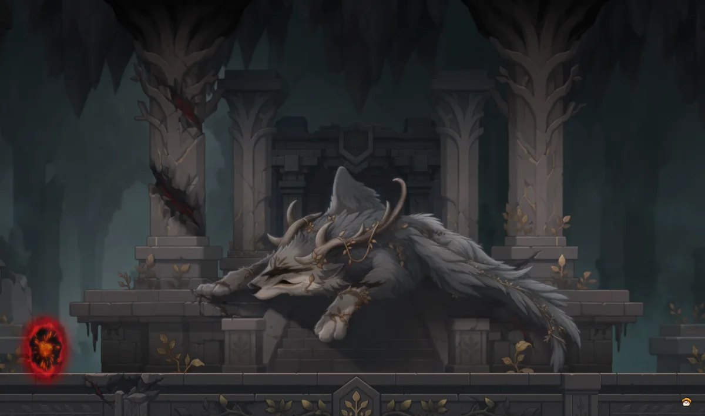
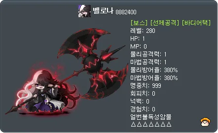
Al entrar: el espíritu competitivo de Bellona llegó al límite. Sus ataques serán aún más feroces.
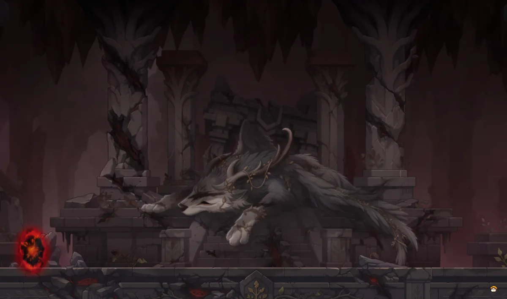
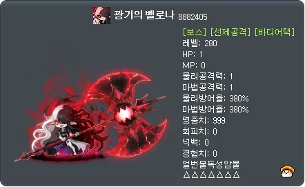
La ficha del monstruo muestra HP 1 porque el HP real depende de la dificultad. La guía original no da los valores de HP.
Bellona aparece atacando al iniciar cada fase. Si te golpea, pierdes 1 vida.
Si un patrón no indica tiempo de reutilización, es de 3 s / 3 s / 1 s.
Solo los usa fuera de Insane. Cada golpe baja el medidor 8080160 y hace daño según tu HP máximo.
Si no hay jugadores cerca de Bellona, se teletransporta junto a un jugador al azar. Solo lo hace fuera de Insane.
Bellona ataca el área que la rodea.
Bellona embiste hacia adelante. Agáchate para esquivarla.
Fase 2 con HP mayor a 50%
Fase 2 con HP de 50% o menos
Bellona lanza ondas hacia la izquierda y la derecha, una cada 0.6 s.
Los usa dentro y fuera de Insane. Cada golpe baja el medidor 200400600 y te quita 1 vida.
Bellona se teletransporta junto a un jugador y ataca. Agáchate para esquivarlo. En la fase 2 ataca más rápido.
Fase 1
Fase 2
Animación de aviso (fases 1 y 2)
Fase 1
Fase 2
Fase 1 · ataque de arriba
Fase 1 · ataque de abajo
Bellona va al centro
Masas de espíritus en el borde
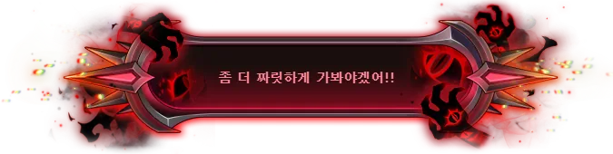
“¡Hagámoslo todavía más emocionante!”
좀 더 짜릿하게 가봐야겠어!!
Los colores marcan el orden: rojo → naranja → amarillo → verde → azul → morado.
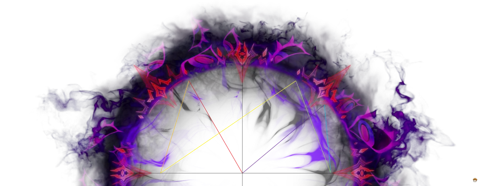
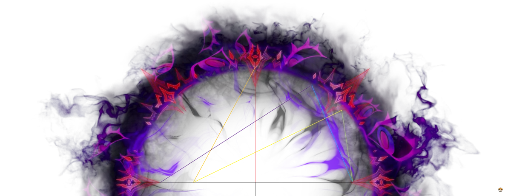
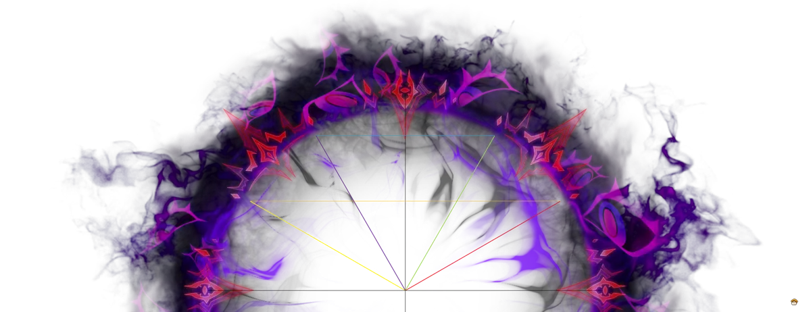
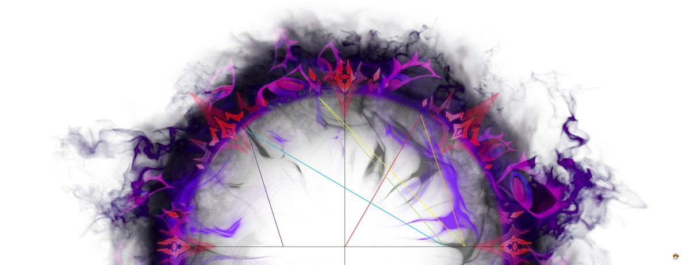
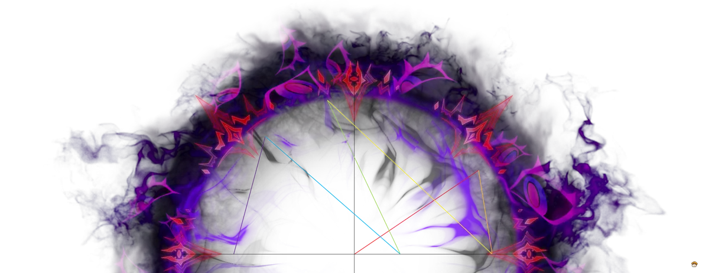
Es el patrón más peligroso de la pelea. Se prepara durante Insane y se activa al salir de él.
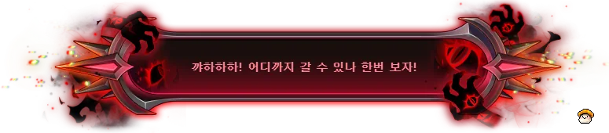
“¡Kyajajaja! ¡Veamos hasta dónde puedes llegar!”
꺄하하하! 어디까지 갈 수 있나 한번 보자!
Mensaje del sistema: Bellona recoge las marcas de espíritu una por una y prepara un ataque poderoso. Si te golpea, parece que recuperará vida.
Bellona ataca un área muy grande. Quédate dentro del triángulo que se marca en el suelo para no recibir daño.
Bellona ataca 2 veces un área grande, tomando como referencia la posición del jugador objetivo.
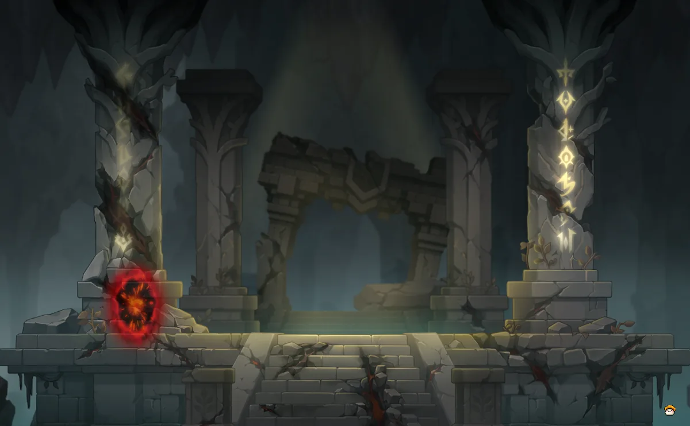
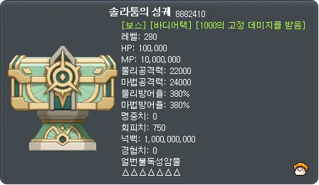
Esta guía es una traducción y adaptación al español de la guía original de 섣버 (seotbeo), del blog 섣버의 메이플월드. Las imágenes y animaciones son del autor original y se reemplazarán por grabaciones propias.
Ver la guía original en Naver Blog
Versión base: KMS v1.2.418 (20 de agosto de 2026). Algunos valores pueden cambiar en GMS.
Cambio de trayectoria (antes → después)
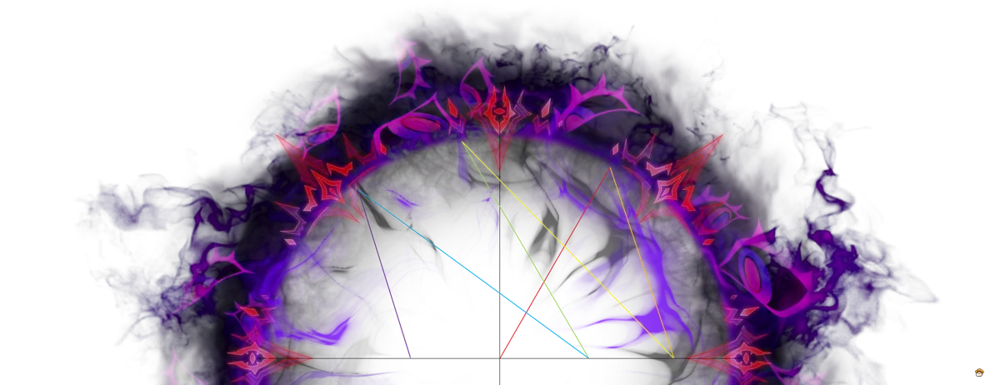
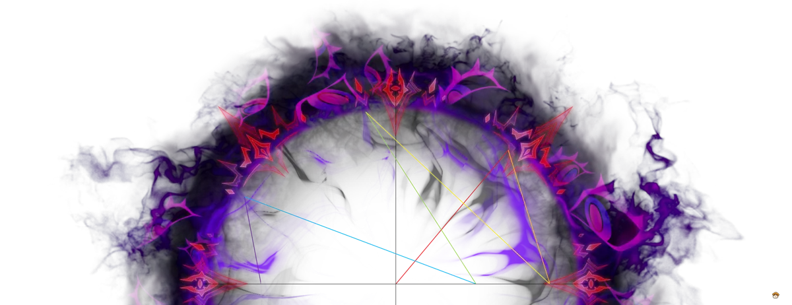